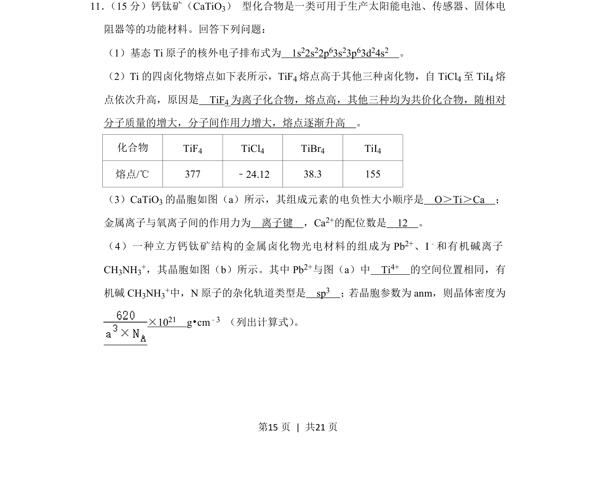
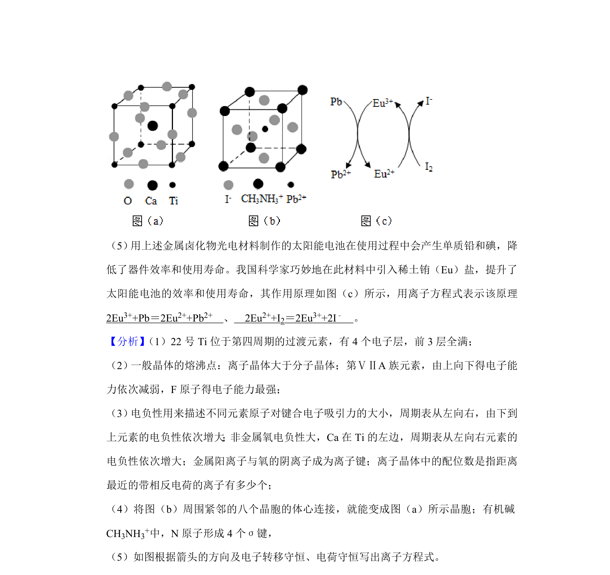
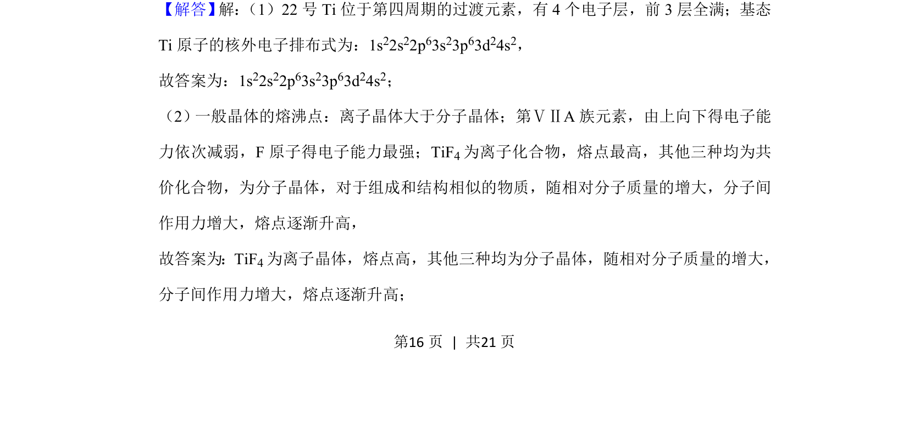
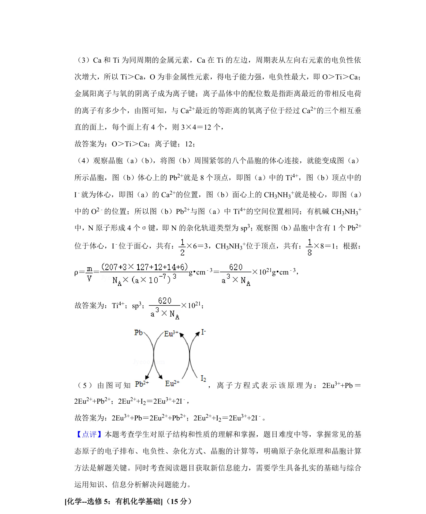

考点：电子排布式 分子间作用力与离子键 电负性 晶体结构与密度计算


考查基态原子电子排布、四卤化物熔点比较、钙钛矿晶胞结构及密度计算。


📄 原 PDF 第 15 页：
素材/真题/吉林/2008-2024·（吉林）化学高考真题/2020年高考化学试卷（新课标Ⅱ）（解析卷）.pdf
11． （15分）钙钛矿（CaTiO3） 型化合物是一类可用于生产太阳能电池、传感器、固体电 阻器等的功能材料。回答下列问题： （1）基态Ti原子的核外电子排布式为 1s 22s22p63s23p63d24s2 。 （2）Ti的四卤化物熔点如下表所示，TiF 4熔点高于其他三种卤化物，自TiCl 4至TiI 4熔 点依次升高，原因是 TiF4为离子化合物，熔点高，其他三种均为共价化合物，随相对 分子质量的增大，分子间作用力增大，熔点逐渐升高 。 化合物 TiF4 TiCl4 TiBr4 TiI4 熔点/℃ 377 ﹣24.12 38.3 155 （3）CaTiO3的晶胞如图（a）所示，其组成元素的电负性大小顺序是 O＞Ti＞Ca ； 金属离子与氧离子间的作用力为 离子键 ，Ca2+的配位数是 12 。 （4）一种立方钙钛矿结构的金属卤化物光电材料的组成为Pb 2+、I﹣和有机碱离子 CH3NH3+，其晶胞如图（b）所示。其中Pb 2+与图（a）中 Ti 4+ 的空间位置相同，有 机碱CH 3NH3+中，N原子的杂化轨道类型是 sp 3 ；若晶胞参数为anm，则晶体密度为 ×1021 g•cm﹣3 （列出计算式） 。